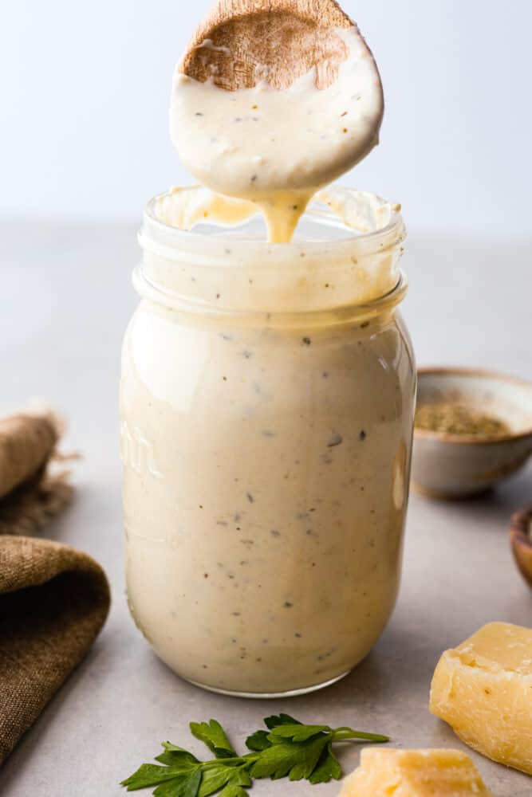

Best Homemade Alfredo Sauce Recipe!

Original recipe link
Description
This is the most creamy and delicious homemade alfredo sauce
that you will ever make! It’s a tried and true recipe that will
take all of your favorite pasta dishes to the next level.
Ingredients
- Butter
- Heavy Cream
- Cream Cheese
- Minced Garlic
- Garlic Powder
- Italian Seasoning
- Salt & Pepper
- Grated Parmesan Cheese
Steps
- Whisk Dairy Ingredients Together: In a medium saucepan add butter, heavy whipping cream, and cream cheese. Then cook over medium heat and whisk until melted.
- Add In Seasonings: Add the minced garlic, garlic powder, Italian seasoning, and salt and pepper. Then continue to whisk until smooth.
- Stir in Cheese: Add the grated parmesan cheese.
- Thicken Your Sauce: Bring to a simmer and continue to cook for about 3-5 minutes until it starts to thicken.
- Toss With Pasta: Toss alfredo sauce with your favorite pasta! I always go for fettuccine noodles to make the best fettuccine alfredo ever!